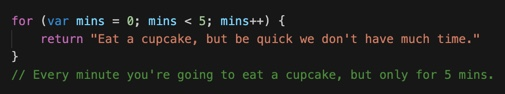
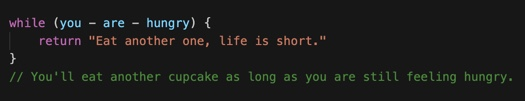
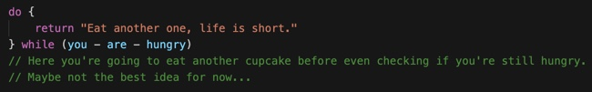
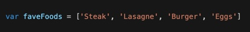
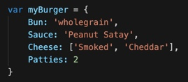

Introduction To JavaScript
HTML vs CSS
Think of a house. The HTML is all of the base properties that the house needs. The walls, the doors, the windows, the roof, floor, and whatever else the house needs to be functional. The CSS would be how everything about the house looks. What colour the paint is, how tall the house is, where the doors are located, what the walls are made of, etc. Everything that affects the look and style of the house is done by the CSS.
CONTROL FLOW AND LOOPS
Let’s go inside the house and make some toast for breakfast. Control flow will help us determine what we will have on our toast. Our favourite flavour is peanut butter, so if that’s available we’ll have that. But we need some backup options if there isn’t any. Control flow will dictate what we have on our toast, depend on what is available in the cupboard.
Here we have instructions that tell us if there is peanut butter, to make toast with that. If there isn’t any but there is marmite, we will have that instead. But in the unlucky event that we are lacking both ingredients, we’re going to suffer with plain crispy bread. Yum.
With loops, we can choose to repeat the same set of instructions multiple times. There are three different ways we can do this, by using the ‘for,’ ‘while,’ and ‘do… while’ loops. Let’s take a look at how we want to approach eating some delicious cupcakes we happened to have spotted while making our toast.
  THE DOM
The DOM (or Document Object Model) is an interface which represents each component of the HTML document as an
object. Which in turn, allows JavaScript (an object-orientated language) to manipulate and interact with
everything within the document.
Each element in the DOM is referred to as a ‘node,’ and the model sees everything in the form of a tree diagram,
seen in the (simplified) image below.

An example of a way we can use JavaScript to access a node is through classes. If I wanted to change the background colour of each item that had the class 'heading,' I can find them all in JavaScript using document.getElementsByClassName(‘heading’) and choose to make my changes from there.
ARRAYS AND OBJECTS
Arrays and objects are two different ways you can use variables to store multiple bits of information. The difference being that an array is a variable that contains a list of multiple data points, while objects are variables that contains multiple properties representing them.
Look at the examples below.
This is an array. Note: Within the square brackets there can be strings, numbers, objects, Booleans, and even other arrays. Arrays are accessed with zero-indexing, meaning that each element is numbered within the array starting from zero. So if I wanted to access ‘Burger‘ I would have to use console.log(faveFoods[2]).
This is an object. Objects are different as you access the key for a property within the variable, done
through either a dot, or bracket notation (though with a slight difference of one needing quotes and one
not).
For example, both console.log(myBurger.Sauce) and console.log(myBurger['Sauce']) will return the property 'Peanut Satay.'
FUNCTIONS
Functions are a set of code that is used to perform a set of instructions. We create the code required for a
certain task, then we can call that function to be used anytime throughout or code. This is extremely handy as
it means we can write the function once and reuse it whenever we want or need to.
Here is an example of a function that determines if somebody would enjoy eating dessert after dinner.
If I enter my details into the function wantsDessert(true, Jimmi), true being yes I absolutely feel like something sweet, and name being my name, then of course the function returns 'Hell yea Jimmi, treat yourself!'